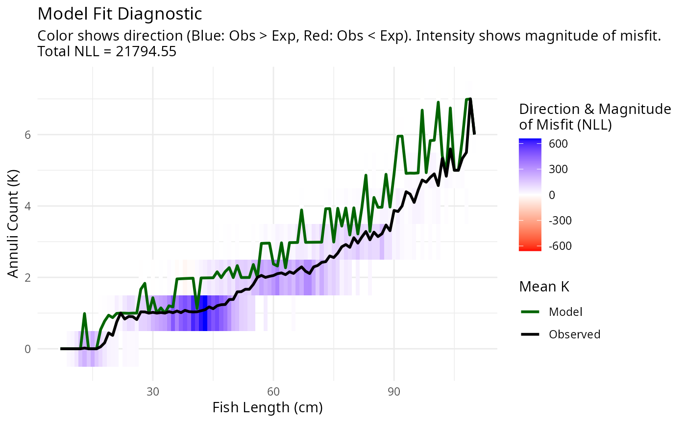

Estimating growth rates from age-at-size data
Source:vignettes/growthEstimation.Rmd
growthEstimation.RmdI still need to write this vignette.
library(growthEstimation)
pars <- list(
k = 0.1,
L_inf = 110,
d = 1,
m = 1,
annuli_date = 0,
annuli_min_age = 0,
spawning_mu = 0.4,
spawning_kappa = 10
)
age_at_length <- Cod_CS_age_at_length
plotAgeLikelihood(pars, age_at_length)
To start tuning parameters, run the following code. A Shiny app will open
tune_pars(pars, age_at_length)You can automatically tune the parameters with
fit <- fit_tmb_nll(
pars,
surveys = age_at_length,
Delta_l = 1,
Delta_t = 0.05)
pars <- fit$pars
plotAgeLikelihood(pars, age_at_length)